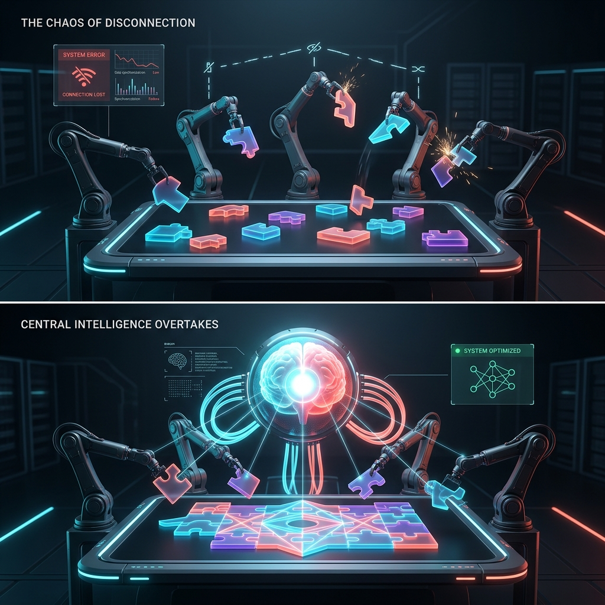

한 핀테크 창업자가 야심 차게 도입한 5개의 AI 에이전트가 단 48시간 만에 참담한 실패로 끝났습니다. 이유는 간단했습니다. 마케팅, 영업, 개발, 커뮤니티 관리를 맡은 각 에이전트가 서로의 맥락을 전혀 공유하지 못했기 때문입니다. 이 문제를 단숨에 해결한 것은 스스로 학습하고 기억을 축적하는 단일 AI 프레임워크인 'Hermes Agent'였습니다.

기존의 AI 에이전트 도입 방식은 역할별로 여러 개의 봇을 배치하는 것이 일반적이었습니다. 하지만 실제 업무 환경에서는 마케팅 카피의 톤앤매너가 영업 메시지에 반영되어야 하고, 고객의 피드백이 다음 날 콘텐츠 기획에 즉시 녹아들어야 합니다. 여러 에이전트가 쪼개져 있으면 스킬이 중복되고, 하나를 수정하면 다른 곳에서 톤이 어긋나는 악순환이 일어납니다. 원문 작성자 Nick Spisak이 소개한 사례에 따르면, 창업자는 5개의 에이전트를 폐기하고 Hermes Agent 단 하나로 모든 작업을 통합한 후에야 일관된 브랜드 보이스와 놀라운 업무 효율을 경험할 수 있었습니다.
🚀 대화할수록 진화하는 지속적 메모리와 자동화
Hermes Agent의 가장 큰 차별점은 세션이 종료되어도 사라지지 않는 '지속적 메모리'에 있습니다. 과거에 성공했던 작업 방식이나 사용자가 선호하는 환경을 사실과 절차로 나누어 저장합니다. 특히 반복되는 작업은 지시하지 않아도 스스로 스킬 문서로 정리해 두어, 다음번에는 처음부터 시행착오를 겪지 않고 곧바로 최적화된 결과물을 도출합니다.
텔레그램, 슬랙, 디스코드 등 모바일과 데스크톱을 넘나들며 하나의 에이전트와 대화할 수 있는 높은 접근성도 강점입니다. 여기에 자연어로 설정할 수 있는 내장 크론(Cron) 스케줄링을 활용하면, 매일 아침 특정 업무를 무인으로 자동 실행하는 시스템을 쉽게 구축할 수 있습니다. 또한 MCP(Model Context Protocol) 서버를 연결해 브라우저 제어나 데이터베이스 접근 능력까지 제한 없이 확장할 수 있습니다.
🧠 생태계의 OpenClaw vs 학습 중심의 Hermes
다양한 도구를 연결하는 데 특화된 OpenClaw와 비교할 때, Hermes Agent는 전혀 다른 설계 철학을 보여줍니다. OpenClaw가 여러 도구를 조율하는 거대한 '플랫폼'에 가깝다면, Hermes는 스스로 묵묵히 성장하는 단일한 '운영자'입니다.
-
• 메모리 방식Hermes는 경험이 스킬로 통합되는 동적 메모리, OpenClaw는 일관성 유지를 위한 정적 메모리를 사용합니다.
-
• 적합한 환경창작 스타일 적응 등 패턴 학습이 필요하면 Hermes, 기업 내 다양한 외부 도구를 즉시 연동해야 한다면 OpenClaw가 유리합니다.
-
• 실전 조합코딩은 Claude Code에 맡기고, 외부 모니터링과 피드백 수집은 Hermes에 맡겨 순환 구조를 만드는 방식을 추천합니다.